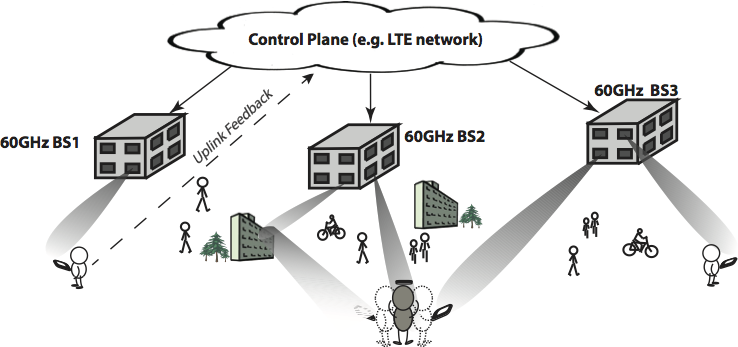

About
In this project we design and validate a transformational approach to Cellular 1000X (i.e., increasing the capacity of cellular networks by 1000-fold), focusing on dense urban environments where today’s cellular networks are facing a capacity crisis. Our architecture is based on outdoor picocells using the 60 GHz unlicensed band, focusing initially on the downlink bottleneck, with standard 4G LTE used for feedback and uplink data.
Figure 1
Figure 1 plots our proposed 60GHz picocell architecture for outdoor mobile broadband, which augments existing LTE networks for significant increase in capacity. Each basestation contains many antenna arrays, each with a large number of elements. Leveraging LTE uplink as the feedback loop, each basestation can track users, form highly directional beams simultaneously to multiple users. The beams follow users through direct or reflected paths, creating high-bandwidth downlink transmissions. Users can beam in reverse directions to build 60GHz uplink, or fall back to LTE uplink.
Project Team
Prof. Upamanyu Madhow (PI), Prof. Heather Zheng (co-PI), Zhinus Marzi (Graduate Researcher), Maryam E. Rasekh (Graduate Researcher),Yuanshun Yao (Graduate Researcher), Zengbin Zhang (Graduate Researcher), Yibo Zhu (Graduate Researcher), Yanzi Zhu (Graduate Researcher)
Research Activities
Year 1: We have focused on measurement-based validation of our basic concept. In particular, we focused on convincing the larger networking community that, while our approach to cellular 1000X is radical, there are no fundamental physical limitations to achieving it. This was done by a series of measurements in controlled as well as natural urban environments, which indicate that there is adequate link budget even when using reflected paths, that blockage can be addressed using reflections and picoclouds, that interference can be significantly reduced by using directional transmission, and that steerable arrays on off-the-shelf 60 GHz IEEE 802.11ad transceivers designed for indoor environments can keep up with pedestrian mobility. These results, together with a preliminary simulation-based interference analysis, were published in MobiCom 2014.
Year 2: We focused on three research items. First, we have been working on quantifying inter-cell interference using a combination of analysis and simulation for 60 GHz picocells deployed in typical urban environments. In particular, we carry out an interference analysis for mm wave picocells in an urban canyon, accounting for the geometry associated with the sparse multipath characteristic of this band. We show that the inter-cell interference caused by the main beam directed at the desired user vanishes after a number of cells determined by the heights of the BS and the user, and the attainable network capacity to be of the order of Terabits/sec per km along the canyon, using 2 GHz of spectrum. Overall, our analysis provides a strong indication of the very large capacity offered by the 60Ghz picocells. Second, we propose and investigate a compressive architecture for estimation and tracking of sparse spatial channels in millimeter (mm) wave picocellular networks. Finally, we develop a 60Ghz mobile imaging algorithm that leveraging 60GHz communication hardware in mobile devices, and capturing signals reflected by the target surface. This work led to a conference paper at MobiCom 2015.
Year 3: We formed a close collaboration with the Facebook Terragraph team, with students from the project interning at Facebook to help with their design and deployment of a mm wave mesh network. We also developed an experimental testbed at UCSB based on mm wave nodes donated by Facebook. Experiments showed that the compressive algorithms underlying our architecture need to be modified. The original algorithms rely on phase coherence across beacons, which is difficult to attain due to oscillator drift between transmitter and receiver. The Facebook nodes, as well as other off-the-shelf hardware, do not support such coherent measurements. This led us to develop new noncoherent compressive channel estimation algorithms, which can reconstruct the spatial channel based on received signal measurements alone. We also worked on a joint routing and resource allocation strategy for mm wave mesh backhaul networks, and developed an optimization approach that can provide an optimal solution for relatively small networks. Initial results were presented at Allerton 2015.
Year 4: This was an extension year, where we focused on consolidating our work, and folding it into a large NSF project with a broader charter. We presented initial results from our noncoherent compressive approach at Hotmobile 2017. This algorithm works when one of the paths is dominant, which is the case for all the campus settings in which we ran our experiments. However, we have since also gone on to develop a noncoherent algorithm that works for a general sparse multipath channel, using a novel combination of phase retrieval and coherent compressive estimation. These results have been submitted for publication, and are also placed in arxiv for timely dissemination. We have also developed a more scalable optimization strategy for mm wave backhaul that works for large networks; to be submitted for publication soon. Finally, we have extended our 60GHz mobile imaging work to use co-located TX and RX on a single mobile device, leading to a publication at the MobiSys 2017 conference.
Publications
-
Demystifying 60GHz Outdoor Picocells
Yibo Zhu, Zengbin Zhang, Zhinous Marzi, Chris Nelson, Upamanyu Madhow, Ben Y. Zhao, Haitao Zheng
Proceedings of 20th Annual International Conference on Mobile Computing and Networking (MobiCom)
Maui, HI, Sept 2014. [Paper] - Interference Analysis for mm-Wave Picocells
Zhinus Marzi, Upamanyu Madhow, Haitao Zheng
Proceedings of IEEE Globecom
San Diego, CA, Dec 2015. [Paper] - Compressive channel estimation and tracking for large arrays in mm wave picocells
Zhinus Marzi, Dinesh Ramasamy and Upamanyu Madhow
IEEE Journal of Selected Topics in Signal Processing, special issue on Signal Processing for Millimeter Wave Wireless Communications, 10.3 (2016): 514-527. [Paper] - Interference aware routing and spectrum allocation for millimeter wave backhaul in urban picocells
Maryam E. Rasekh, Dongning Guo and Upamanyu Madhow
Proceedings of 53rd Allerton Conference on Communication, Control, and Computing, October 2015 [Paper] - Noncoherent mmWave path tracking
Maryam E. Rasekh, Zhinus Marzi, Yanzi Zhu, Upamanyu Madhow, and Haitao Zheng
Proceedings of the 18th International Workshop on Mobile Computing Systems and Applications (Hotmobile 2017), Feb. 2017. [Paper] - Noncoherent compressive
channel estimation for mm-wave massive MIMO,
Maryam E. Rasekh and Upamanyu Madhow
arxiv 1801.06608 (submitted for publication). - 60GHz Mobile Imaging Radar
Yibo Zhu, Yanzi Zhu, Zengbin Zhang, Ben Y. Zhao and Haitao Zheng
Proceedings of 16th Workshop on Mobile Computing Systems and Applications (HotMobile)
Santa Fe, NM, Feb 2015.[ Paper ] - Reusing 60GHz Radios for Mobile Radar Imaging
Yanzi Zhu, Yibo Zhu, Ben Y. Zhao and Haitao Zheng
Proceedings of 21st Annual International Conference on Mobile Computing and Networking (MobiCom)
Paris, France, Sept 2015 [ Paper ] - Object Recognition and
Navigation using a Single Networking Device
Yanzi Zhu, Yuanshun Yao, Ben Y. Zhao and Haitao Zheng
Proceedings of the 15th ACM International Conference on Mobile Systems, Applications, and Services (MobiSys 2017), Niagara Falls, NY, June 2017. [ Paper ]
Educational Activities
Graduate students working on this program are exposed to an interdisciplinary mix of concepts from signal processing, communication theory, network protocols and capacity analysis, and measurement-based modeling.
Broader Impact
Our systems vision is based on the power of highly directional networking, and includes approaches to adapt highly directional beams subject to hardware constraints such as coarse phase control. We believe that demonstration of the potential gains will stimulate further innovations in design of radio frequency integrated circuits (RFICs) and antenna arrays, and are working actively with circuit designers to make this happen.
We have had close interactions with industry partners, such as Facebook, Qualcomm, Samsung, Nokia, and Google, who have supplemented this award with gift funding. We note in particular our relationship with the Facebook Terragraph team, which donated mm wave network nodes that enabled many of our experiments. Graduate students on this project helped disseminate our ideas, and gained hands-on experience, through summer internships in industry.